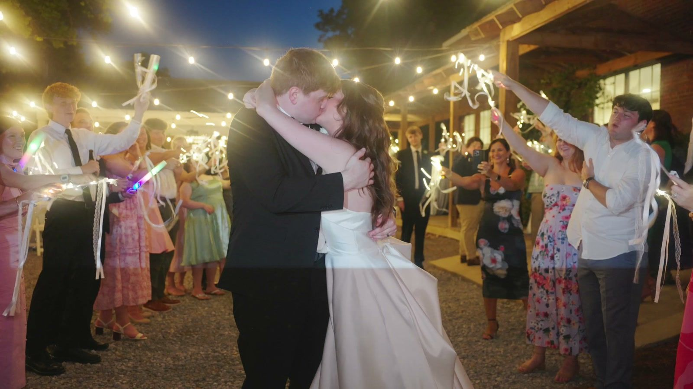
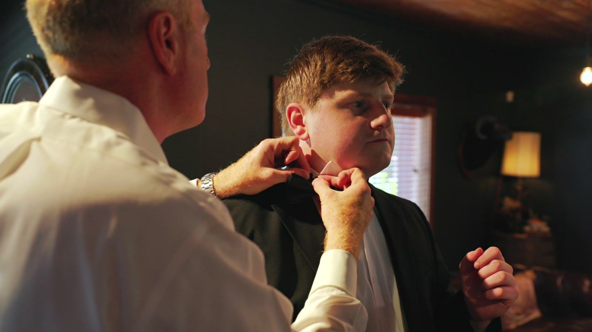
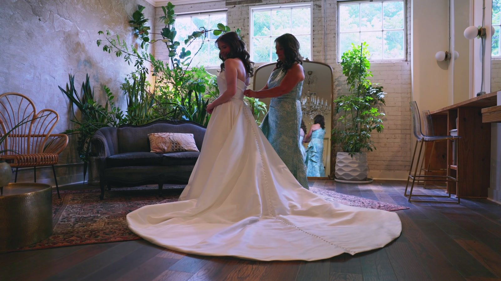
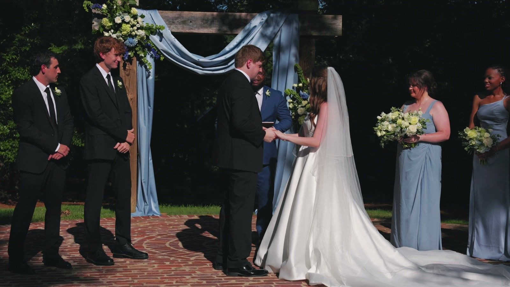
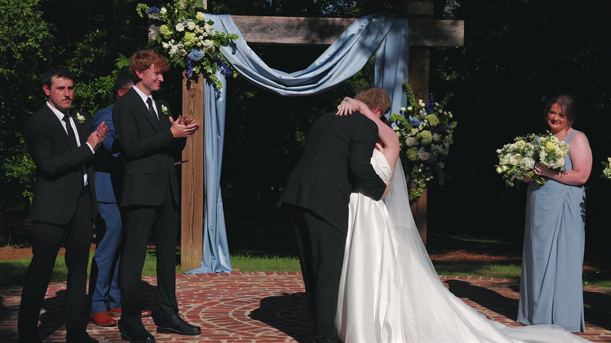
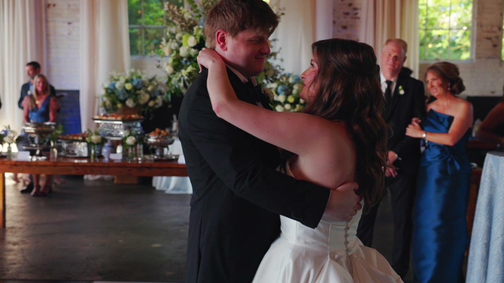

Ceremony
2 hoursJust the ceremony itself, with mics on the groom and the officiant.

My wedding coverage is one window of 2, 6, 8 or 10 hours. We set where it starts on a planning call, around your ceremony time, sunset and, in Oxford, the home game schedule.
Just the ceremony itself, with mics on the groom and the officiant.
Before the ceremony, the ceremony and the reception, edited into a 3 to 5 minute highlight film.
Two more hours than Essentials, with a second videographer, drone where it's permitted and pro audio for the ceremony and toasts.
Two more hours than Story, with a second videographer and drone, plus your rehearsal dinner toasts. It also includes the full ceremony film and a short social reel of 30 to 60 seconds.
If none of these fit, send me your ceremony time and venue and I'll quote custom coverage.
I don't usually come to the rehearsal. The rehearsal dinner is different: toast coverage there is an add-on, and it's included in Legacy.
The stills below are from Kendall & Steven's film, which plays in full on my wedding videography page.
If you get ready in separate rooms, one videographer can only be in one of them. Story and Legacy add a second videographer.


If you're doing a first look, your photographer and I both need those few minutes, so I coordinate the timing with them and your planner. In the six-hour example below, it falls in the first block.
Mics go on the groom and the officiant. How I back up ceremony audio, and what changes when a church won't allow mics, is on my page about ceremony-only wedding films.


If you want the first dance and toasts in your film, plan them inside your coverage window. In the six-hour example below, that means before 10:00 PM. Story and Legacy put professional audio on the toasts.

If you want your exit in the film, we plan your window around it. Before we do, check your venue's end time and what it lets guests throw or light. There are two Oxford examples below.
Say your ceremony is at 5:00 PM and you've booked Essentials. Six hours could run like this:
More answers on booking, music and footage: questions to ask a wedding videographer.
Sunset falls at about these times on the 15th of these months in 2027, per the U.S. Naval Observatory.
Oxford 7:29 PM
Jackson 7:30 PM
Oxford 7:52 PM
Jackson 7:51 PM
Oxford 8:11 PM
Jackson 8:09 PM
Oxford 7:06 PM
Jackson 7:08 PM
Oxford 6:24 PM
Jackson 6:29 PM
Oxford 4:55 PM
Jackson 5:01 PM
In mid-October in Oxford, sunset is about 6:24 PM, so a 5:00 PM ceremony that runs 20 to 40 minutes still ends in daylight. By mid-November it's about 4:55 PM, before a 5:00 PM ceremony even starts.
Daylight saving time starts Sunday, March 14, 2027 and ends Sunday, November 7, 2027. In Oxford, sunset is about 6:00 PM on Saturday, November 6, and about 5:00 PM the next weekend.
NOAA's 1991 to 2020 normals put Oxford's July and August highs around 91°F and Jackson's around 92°F. September and October see the fewest rainy days in Oxford.
NOAA data files (CSV): University, MS station (Oxford), Jackson International Airport
What two Oxford venues, a church, the university, the FAA and Visit Oxford publish about timing a wedding day here. Rules checked September 2026.
On an Ole Miss home football game day:
Sources: Paris-Yates Chapel weddings page, St. John the Evangelist wedding guidelines (PDF), FAA stadium restrictions, Visit Oxford, where to stay
Weddings are on available Saturdays between 9:00 AM and 9:00 PM, one per Saturday, and all setup, decorations and cleanup have to fit inside that window. The chapel is also unavailable on university holidays. Rehearsals are scheduled the Friday before the wedding.
For petals and the exit: inside the chapel only silk or polyester petals are allowed (and must be cleaned up). Outside, real petals or bird seed may be used, but rice and confetti are not allowed.
Source: Paris-Yates Chapel weddings page
Around the Square and campus, the airspace itself doesn't need FAA authorization. The University of Mississippi still requires an approved UAS Request Form before any drone flight on university property.
I'm FAA Part 107 certified and handle any FAA paperwork myself. For drone work in a restricted location, I generally need at least a week's notice.
Sources: University of Mississippi drone policy, FAA rule for controlled airspace (14 CFR 107.41)
Check it before we set your window. Isom Place's FAQ, for example, says all music ends by 10:00 PM under the residential noise ordinance, and glitter and confetti aren't allowed.
LED sparklers are allowed there, but ask the venue before planning traditional ones.
Source: Isom Place venue FAQ
Rules checked September 2026.
Downtown Jackson, Fondren, Flowood and Brandon sit in controlled airspace around the Jackson airports, so a drone flight there needs FAA authorization first. Parts of Fondren need an extra request that can't be approved automatically. Much of Madison, Ridgeland and Clinton needs no authorization.
If your venue is downtown, in Fondren, Flowood or Brandon, tell me when you book so I have time to file for that authorization.
The Natchez Trace Parkway Superintendent's Compendium prohibits launching, landing, or operating an unmanned aircraft on Parkway lands and waters unless the Superintendent approves it in writing.
Couples usually book me about six months out, but I'm flexible with dates. Send me your date, ceremony time and venue, and I'll tell you which one fits. I film across Oxford, the Jackson metro and North Mississippi. Email works too, at samuel@samuellongproductions.com, or message me on Instagram.
Check your date